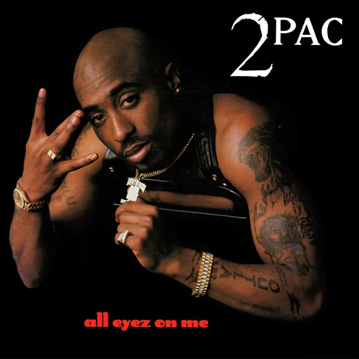
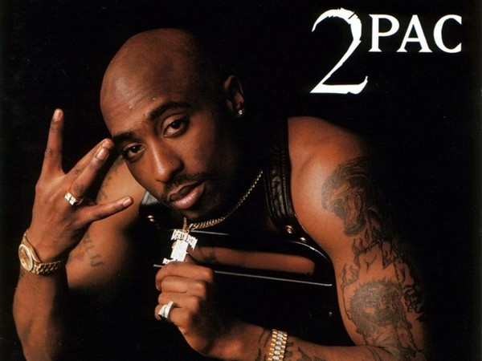
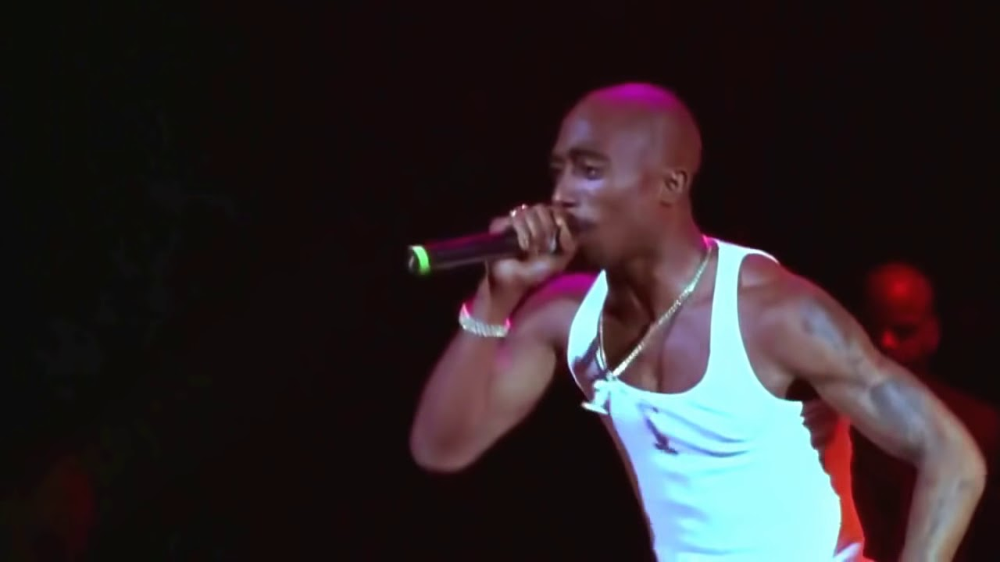

Álbuns Icônicos de Tupac


Tupac Amaru Shakur, também conhecido como 2Pac, foi um rapper, ator e ativista norte-americano. Nascido em 16 de junho de 1971, em Nova York, é considerado um dos maiores e mais influentes artistas da história do hip hop. Suas letras abordavam temas como desigualdade social, violência urbana e racismo.
BiografiaTupac iniciou sua carreira musical nos anos 90 e rapidamente ganhou destaque com seu talento lírico e carisma. Lançou álbuns icônicos como "All Eyez on Me" e "Me Against the World". Ele também atuou em filmes como "Juice" e "Poetic Justice", mostrando seu lado artístico além da música.
FilmografiaTupac vendeu mais de 75 milhões de discos em todo o mundo. Sua música continua influente até hoje, sendo referência para muitos artistas contemporâneos. Além disso, seu ativismo político e social reforçam sua importância como símbolo de resistência e luta por justiça.
Premios

Tupac era muito próximo da mãe, Afeni Shakur, uma ativista dos Panteras Negras. Ele utilizava sua arte para expressar frustrações sociais e defender os direitos da comunidade negra. Sua vida foi marcada por polêmicas, mas também por engajamento político e cultural.
Tupac foi baleado em Las Vegas em 7 de setembro de 1996 e faleceu seis dias depois, aos 25 anos. Sua morte gerou teorias conspiratórias e marcou o fim de uma era no hip hop. Ainda hoje, sua memória é celebrada por fãs ao redor do mundo.
Leia mais